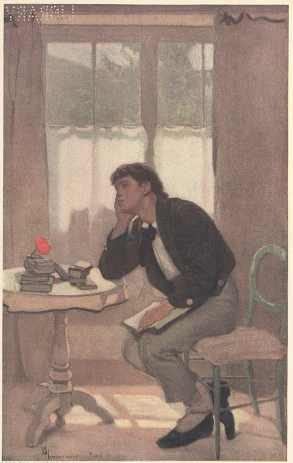

When a book knows you
When a book knows you

Melancholy in art can leave us feeling more alive rather than depressed. What surprises me is not the sadness itself, but how comforting it feels. Why do I willingly seek out stories that leave me emotionally dismantled ?
Every time I finish a Jhumpa Lahiri novel, I make myself the same promise. The next book will be lighter. Something cheerful. Something that doesn’t leave me staring out of the window for an hour after the last page.
And yet, a few weeks later, I find myself wandering back to similar stories as if returning to a city where every street reminds me of someone I’ve never actually met. There is a peculiar freedom in seeing your unnamed emotions living inside fictional strangers. Their loneliness gives language to yours. Their silence makes yours feel less isolating
It’s strange. Every character of Jhumpa Lahiri’s novel feels real. Her characters carry loneliness so quietly that it almost escapes notice. They miss trains, countries, parents, lovers, versions of themselves they could have become. Nothing explodes. Nobody delivers grand speeches. Life simply continues, carrying tiny fractures that deepen over decades.
When I read them, I don’t feel entertained. I feel recognized. I’ve been thinking about that for a long time. Maybe we don’t crave sadness. Maybe we crave honesty. Most of life isn’t triumphant or tragic. It’s made of conversations we replay years later, homes we continue missing after we’ve left them, relationships that end without villains, and versions of ourselves that quietly disappear without a funeral.
Real life rarely offers neat endings. She simply sits beside that quiet grief and says, “Look. This exists.” And somehow, that changes everything. It’s a paradox I’ve never fully understood.
Her stories leave me sad. But they also leave me feeling less alone.
Perhaps that’s what beautiful writing does.
It doesn’t remove our sorrow. It convinces us that someone else has walked through it carefully enough to leave a map.